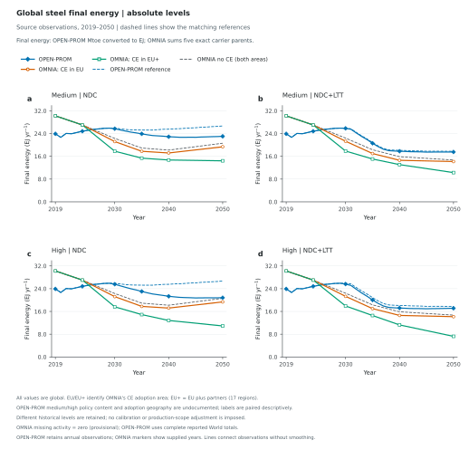
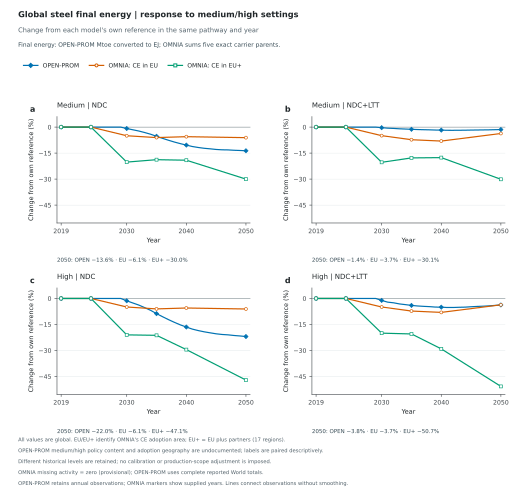
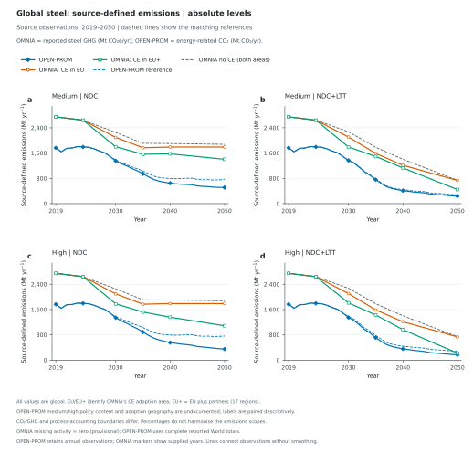
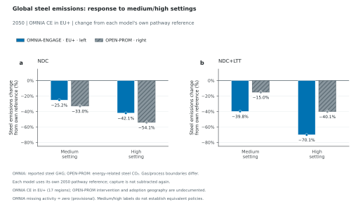

OMNIA-ENGAGE / OPEN-PROM · Global steel · 2019–2050
Steel energy and emissions across scenarios
Absolute levels and changes from each model's own reference. Absolute figures and tables retain both OMNIA EU and EU+ cases. Response figures show only OMNIA EU+ alongside OPEN-PROM: energy trajectories in Figure 2 and paired 2050 emissions bars in Figure 4, under NDC and NDC+LTT.
Every quantity is global. EU/EU+ identifies OMNIA's CE adoption area, not the area being summed. OPEN-PROM's medium/high intervention and adoption geography are undocumented; the labels do not establish equivalent policies. Emissions scopes differ: OMNIA reports steel GHG; OPEN-PROM reports steel energy-related CO₂. Its export has no matching steel process-emissions or GHG total. Percentage responses retain this difference. OMNIA missing activity follows the provisional zero assumption.
2050 final energy
Final energy: all levels in EJ/yr. 2050 level, with change from own 2050 reference below.
Climate
Setting
OPEN-PROM
OMNIA · EU
OMNIA · EU+
NDC
Medium
23.05 −13.6%
19.36 −6.1%
14.43 −30.0%
NDC
High
20.82 −22.0%
19.36 −6.1%
10.91 −47.1%
NDC+LTT
Medium
17.54 −1.4%
14.17 −3.7%
10.29 −30.1%
NDC+LTT
High
17.12 −3.8%
14.17 −3.7%
7.25 −50.7%
2050 source-defined emissions
Emissions: OPEN-PROM levels in Mt CO₂/yr; OMNIA levels in Mt CO₂e/yr. Scopes differ. 2050 level, with change from own 2050 reference below.
How do the global steel responses compare across model, climate and OMNIA adoption area?

Global steel final-energy demand, shown in absolute source quantities with dashed matching reference trajectories. Rows show medium then high settings; columns show NDC then NDC+LTT. OPEN-PROM's corresponding NDC/NDC+LTT CSV supplies its reference; OMNIA uses the same climate's no-CE scenario. The two OMNIA curves change CE adoption area (EU or EU plus partners); every plotted quantity is global. OPEN-PROM medium/high scenario labels do not establish equivalent interventions or geographic coverage. OPEN-PROM uses the supplied World aggregate once; OMNIA sums its 28 model regions once. OPEN-PROM annual observations and OMNIA source years are retained from 2019 through 2050, without interpolation onto a common grid, smoothing, extrapolation or historical recalibration. OPEN-PROM selects Final Energy|Industry|Iron and Steel in Mtoe and multiplies by 0.041868 for EJ/yr. OMNIA sums exactly Electricity, Gases, Hydrogen, Liquids and Solids under the steel final-energy parent, in EJ/yr. Fuel children and energy-transformation inputs are not added. Final-energy units are aligned; full process boundaries remain source-defined. OMNIA missing additive activity follows the configured provisional zero treatment; OPEN-PROM requires complete reported World totals. Raw quantities, units, references, source scenarios and conversion factors accompany the figure data.
Figure 2
Global steel final energy | response to medium/high settings
How do the global steel responses compare across model, climate and OMNIA adoption area?

Global steel final-energy demand, shown as 100 × (setting − reference) / reference in the same model, climate pathway and year. Rows show medium then high settings; columns show NDC then NDC+LTT. OPEN-PROM's corresponding NDC/NDC+LTT CSV supplies its reference; OMNIA uses the same climate's no-CE scenario. Only OMNIA EU+ and OPEN-PROM are plotted; EU-only OMNIA remains unplotted CSV context. Every plotted quantity is global. OPEN-PROM medium/high scenario labels do not establish equivalent interventions or geographic coverage. OPEN-PROM uses the supplied World aggregate once; OMNIA sums its 28 model regions once. OPEN-PROM annual observations and OMNIA source years are retained from 2019 through 2050, without interpolation onto a common grid, smoothing, extrapolation or historical recalibration. OPEN-PROM selects Final Energy|Industry|Iron and Steel in Mtoe and multiplies by 0.041868 for EJ/yr. OMNIA sums exactly Electricity, Gases, Hydrogen, Liquids and Solids under the steel final-energy parent, in EJ/yr. Fuel children and energy-transformation inputs are not added. Final-energy units are aligned; full process boundaries remain source-defined. OMNIA missing additive activity follows the configured provisional zero treatment; OPEN-PROM requires complete reported World totals. Raw quantities, units, references, source scenarios and conversion factors accompany the figure data.
Figure 3
Global steel: source-defined emissions | absolute levels
How do the global steel responses compare across model, climate and OMNIA adoption area?

Global steel source-defined emissions: OMNIA reported GHG versus OPEN-PROM energy-related CO2, shown in absolute source quantities with dashed matching reference trajectories. Rows show medium then high settings; columns show NDC then NDC+LTT. OPEN-PROM's corresponding NDC/NDC+LTT CSV supplies its reference; OMNIA uses the same climate's no-CE scenario. The two OMNIA curves change CE adoption area (EU or EU plus partners); every plotted quantity is global. OPEN-PROM medium/high scenario labels do not establish equivalent interventions or geographic coverage. OPEN-PROM uses the supplied World aggregate once; OMNIA sums its 28 model regions once. OPEN-PROM annual observations and OMNIA source years are retained from 2019 through 2050, without interpolation onto a common grid, smoothing, extrapolation or historical recalibration. OMNIA selects Emissions|GHG|Industry|Iron and Steel in MtCO2e/yr. OPEN-PROM selects Emissions|CO2|Energy|Demand|Industry|Iron and Steel in Mt CO2/yr. The latter equals its gross series minus reported capture within rounding; capture is not subtracted again. OPEN-PROM supplies no steel-specific process-emissions or GHG total. The two source quantities have different gas and accounting scopes; neither absolute levels nor percentage responses establish harmonised steel-emissions comparisons. OMNIA missing additive activity follows the configured provisional zero treatment; OPEN-PROM requires complete reported World totals. Raw quantities, units, references, source scenarios and conversion factors accompany the figure data.
Figure 4
Global steel emissions: response to medium/high settings
How do global steel emissions respond under OMNIA EU+ and OPEN-PROM settings?

Global steel emissions responses in 2050, with NDC on the left and NDC+LTT on the right. Each medium/high category pairs OMNIA-ENGAGE CE in EU plus partners (left solid blue bar) with OPEN-PROM's corresponding ambition setting (right grey hatched bar). EU-only OMNIA cases are not plotted. Each value is 100 × (setting − reference) / reference in the same model, climate and year. OMNIA uses the pathway's no-CE scenario; OPEN-PROM uses its supplied matching CSV reference. All totals are global; EU+ denotes the 17-region CE adoption area, not the area aggregated. OMNIA selects Emissions|GHG|Industry|Iron and Steel in MtCO2e/yr; OPEN-PROM selects Emissions|CO2|Energy|Demand|Industry|Iron and Steel in Mt CO2/yr. OPEN-PROM has no steel-specific process-emissions or GHG total. The different gas and accounting scopes are not harmonised by percentages. The medium/high labels do not establish equivalent interventions or adoption geography. Capture is not subtracted again. Markers identify observed endpoints, including zero; missing values remain gaps. The two panels share a percentage scale. Absolute quantities and references remain in the source CSV, and unplotted EU-only cases and other years are explicitly marked as context. OMNIA missing activity = zero (provisional). Medium/high labels do not establish equivalent policies.